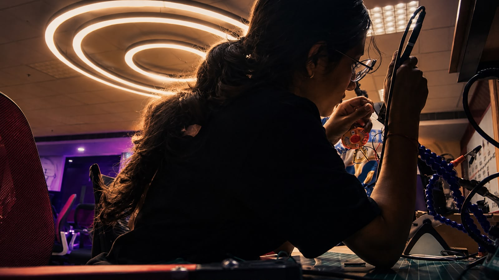
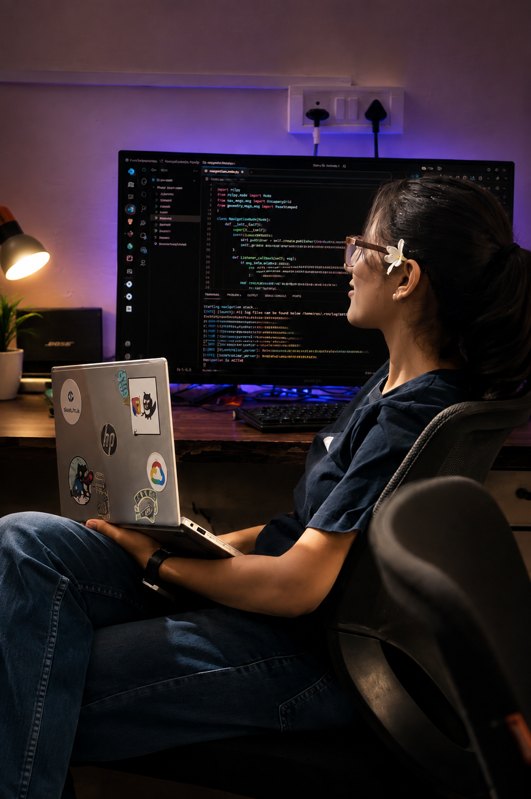
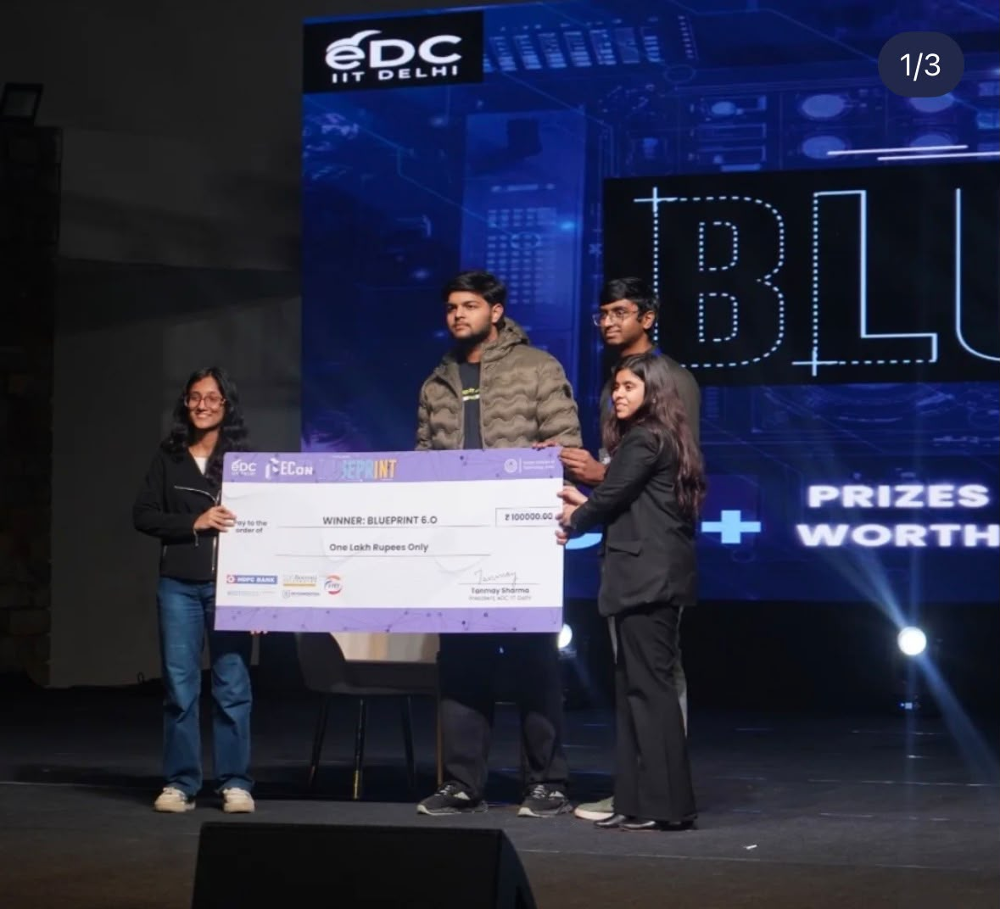
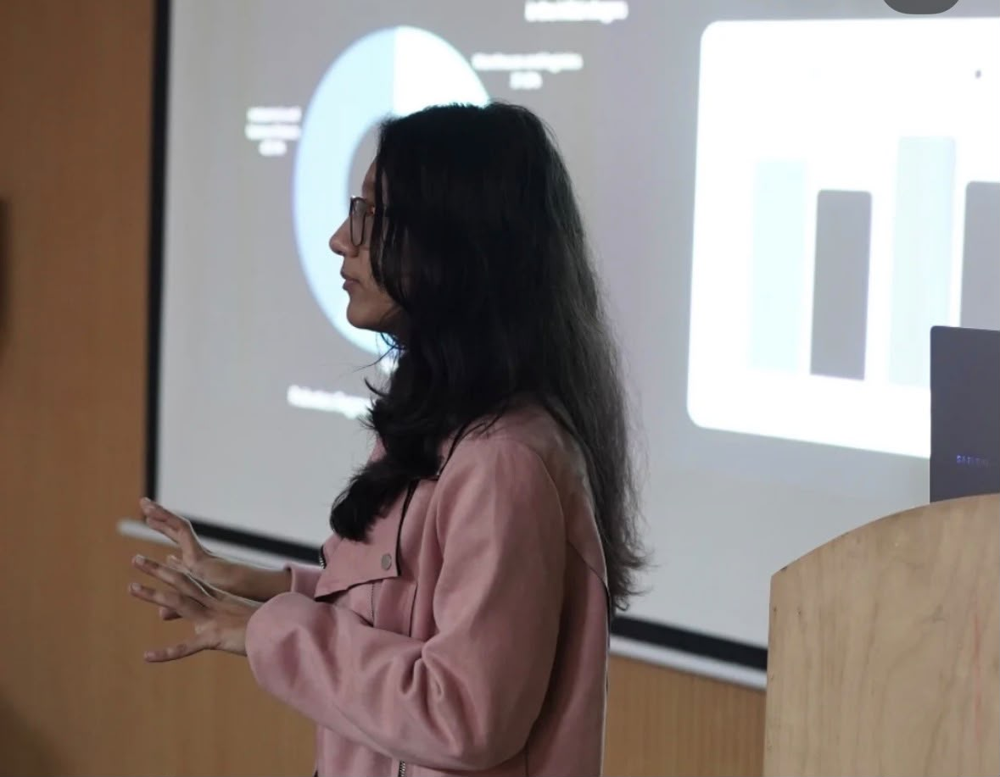

Building intelligent systems for the physical world.
I build robots that see, think, and (mostly) don't fall over. Perception, autonomy, simulation, whatever it takes to get intelligence off the screen and into the real world.


/ 01 — THE DESKEngineering & Computational Mechanics at IIT Delhi by day, robots by everything else. I like problems that don't stay solved on a screen, the kind where you actually build something, it breaks in a way you didn't expect, and you get smarter fixing it;) This site is basically my workshop, put online.
Most of what I build lives somewhere between perception, autonomy and products — the layer where a machine actually starts to understand the room it's standing in.
Autonomous machines, perception, SLAM, navigation, drones and autonomous mobile robots.
Computer vision, object detection, deep learning, and intelligent agents that make decisions.
AI systems that interact with real-world environments — not just screens.
Turning difficult engineering problems into things people can actually use.
This is the thing I actually think about in the shower. A perception layer for robots — so nobody, including future me, has to rebuild vision from scratch every time we want a machine to see and understand where it is.
Started as a vision pipeline for one robot. Turned into something closer to shared infrastructure — the same core stack now handles SLAM, navigation, telemetry and simulated digital twins too.


Not a resume-style project list. More like a folder of things I've actually shipped, broken, and rebuilt. Filter around and see where the obsession shows up.
Half-formed ideas and things I'm actively poking at. No highlight reel here — this is the actual notebook, mess included.
How do machines understand physical environments?
How do perception systems become intelligent?
Can we train and test intelligence before deploying it?
How can mathematical systems create better decision infrastructure?
How do difficult technical problems become products?
I like the part of engineering where a genuinely hard technical problem turns into something people actually use — not a demo that only works once, in a room I controlled.
The short version of how I got from "curious about robots" to building RoVis full-time.
The foundation — math, systems thinking, and the habit of asking how things actually work.
First hands-on robots — navigation, control loops, and learning what breaks in the real world.
Moving from control to perception — teaching machines to notice things before they act on them.
Robogambit, Shipathon and others — compressed timelines that force real engineering trade-offs.
An engineering internship that pushed thinking beyond robotics — into infrastructure and systems at scale.
Research into perception systems that don't just map space, but understand what's in it.
The current mission — perception infrastructure for robots, built to outlast any single project.
Where simulation becomes the operating environment for physical AI.
Hover a node to trace its connection back to the core.
The stuff I post while it's happening, not after it's polished. Logs, notes, screenshots of things half-working.
Rebuilding RoVis's vision stack around a leaner detection model — faster inference, fewer dropped frames in the field.
Notes from running semantic SLAM outside a controlled lab setup — where the real edge cases show up.
A short, honest log of what failed, why, and what it changed about the next iteration.
The case for a shared perception layer instead of rebuilding vision from scratch for every robot.
/ ROBOTICS · PERCEPTION · AUTONOMY · SIMULATION · PHYSICAL AI
I don't want to only build software that exists on screens.
I want to build intelligence that exists in the physical world.
If you're building robots, AI, deep-tech, or something sufficiently unreasonable — I probably want to hear about it. Reach out, no formal pitch needed.